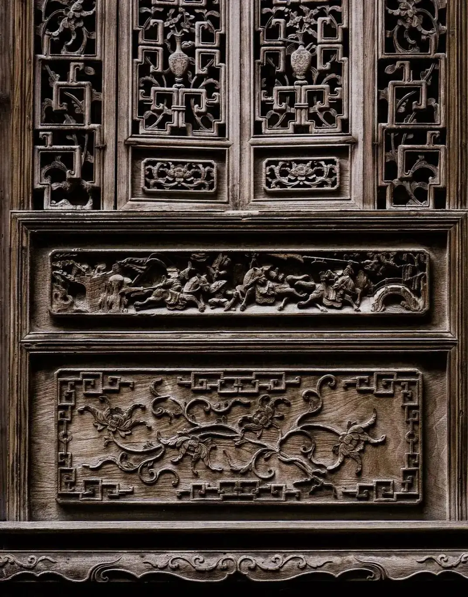
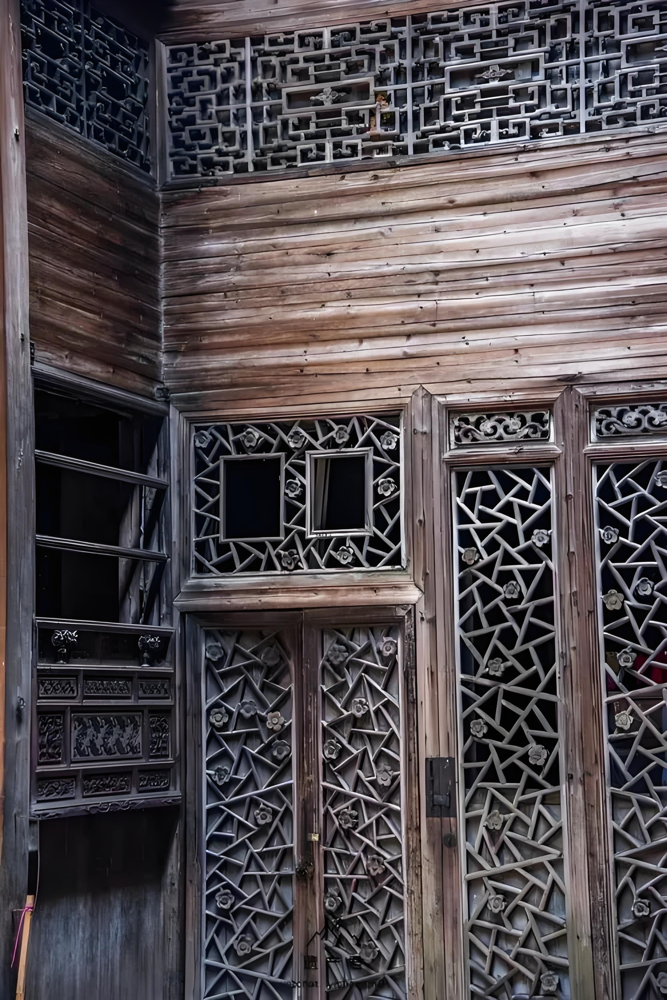
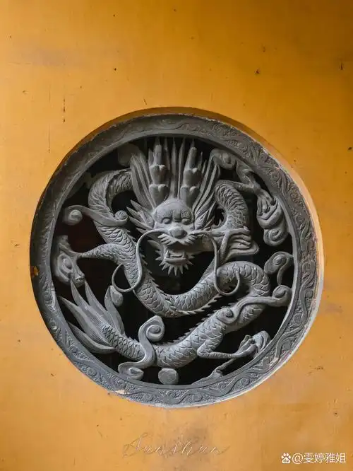
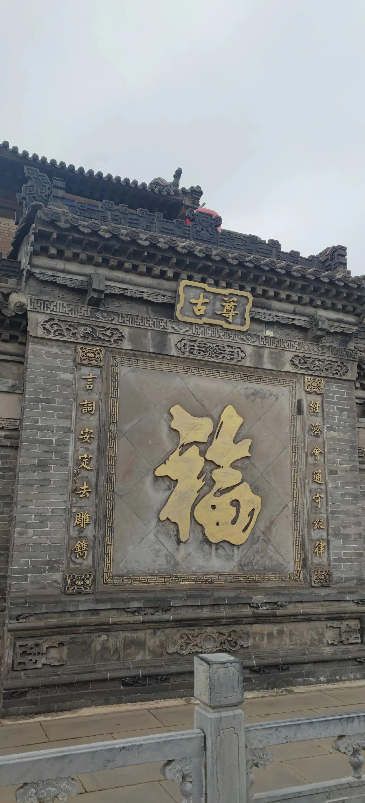
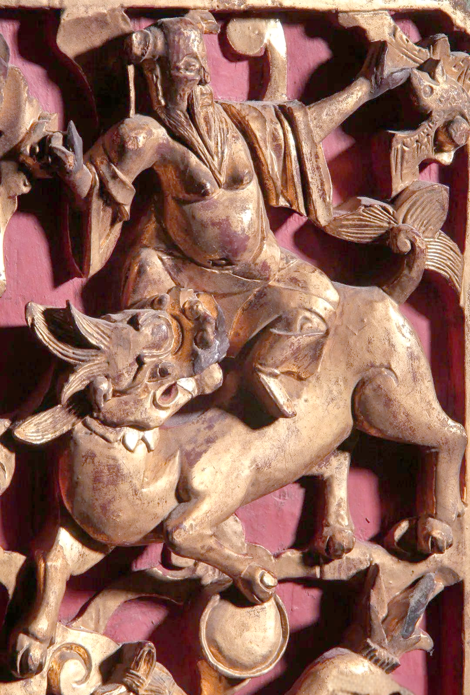
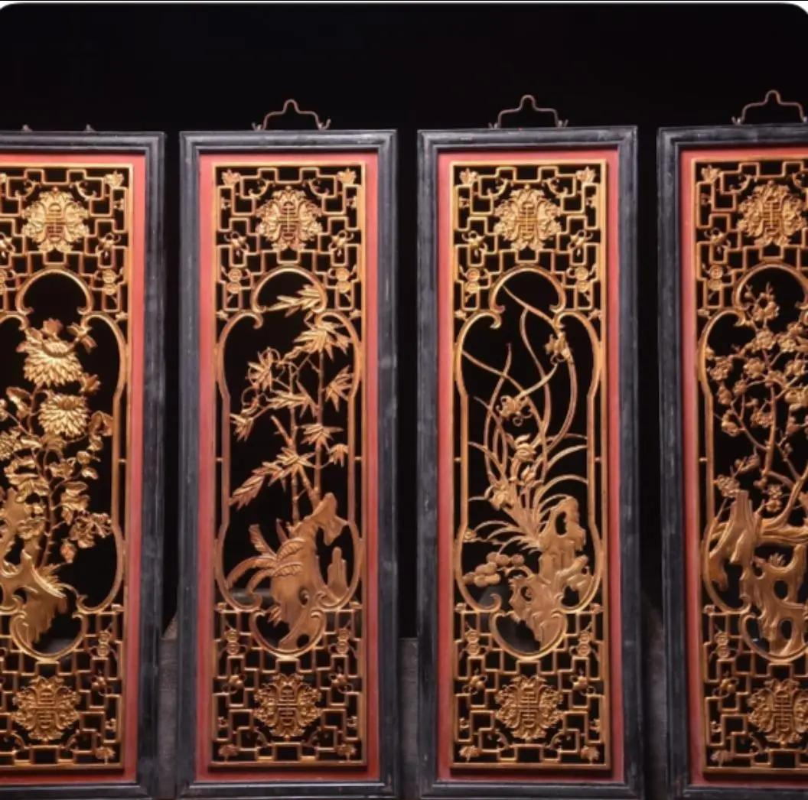
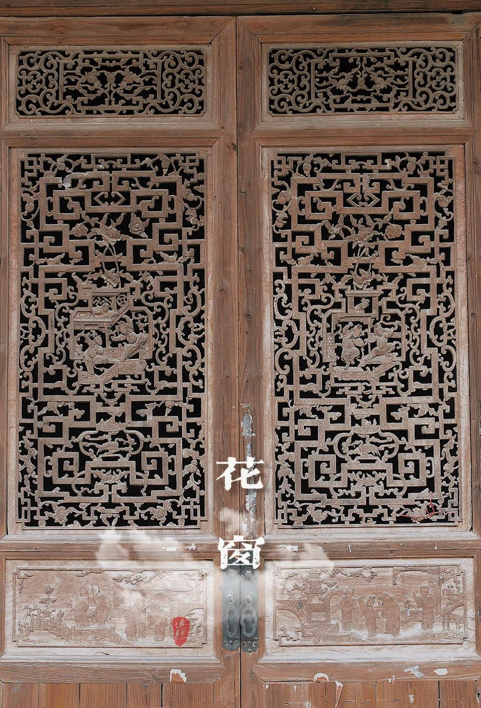

刀凿封存的时光

静默的史书
走马古镇的木雕文化，是镶嵌在川东民居肌理中的一段静默历史。它不像东阳木雕或徽州木雕那样声名显赫，却以其独特的生活气息和匠人温度，讲述着古镇的过往与现在。
走马古镇始建于东汉，曾是成渝古驿道上的重要一站。这里的木雕并非独立艺术品，而是与建筑融为一体，是"穿斗式"木结构建筑中不可或缺的装饰。
门楣花窗、梁柱牛腿、檐板匾额、屏风隔扇之上，皆是匠人手中刀刻斧凿的诗意。

走马古镇的木雕文化，是镶嵌在川东民居肌理中的一段静默历史。它不像东阳木雕或徽州木雕那样声名显赫，却以其独特的生活气息和匠人温度，讲述着古镇的过往与现在。
走马古镇始建于东汉，曾是成渝古驿道上的重要一站。这里的木雕并非独立艺术品，而是与建筑融为一体，是"穿斗式"木结构建筑中不可或缺的装饰。
门楣花窗、梁柱牛腿、檐板匾额、屏风隔扇之上，皆是匠人手中刀刻斧凿的诗意。
Carving Categories

古镇民居最常见的雕花载体。万字纹、冰裂纹、缠枝纹各具其妙，光影透过格扇，便是半幅水墨。

承重之处亦不忘装饰。狮子、麒麟、卷云纹层层叠叠，是匠人在结构上留下的浪漫笔墨。

檐下雀替、堂前匾额，常以戏文典故、福禄寿喜入题，是一户人家精神面貌的门楣写照。
Craft Process
多取楠木、樟木、椿木等，纹理细腻、不易开裂，能存百年而依然温润。
匠人提笔在木板之上勾勒底稿，每一根线条都要兼顾叙事与构图。
用大凿去除多余木料，将主体形状打出来，刀锋之下木屑纷飞。
换小刀慢工细修，眉眼、衣纹、花瓣、鳞片，方寸之间尽显匠心。
以细砂、稻壳、棕刷反复打磨，使木雕表面温润若玉。
古法生漆或桐油上罩，封存色泽与气息，便可与建筑同呼吸。

"三国"、"水浒"、"西厢"、"二十四孝"，是匠人最爱入刀的题材。一块花板便是一折戏，听不见唱腔，却能看见人物的情绪。
这些故事是先人对子孙的言传身教，也是古镇精神世界的具象化呈现。

梅兰竹菊象征气节，鸳鸯莲花寓意美满，蝙蝠铜钱代表福禄。每一种题材都承载着古镇人对美好生活的祈愿。
它们安静地停在墙上、梁上、窗上，世世代代守护着一户户川东人家。

如今，走马的木雕匠人仍在传承这份手艺。他们守着老宅旧院，凿刻着新生活里的传统纹样，也将这份古老的语言带到了文创产品、研学课堂与现代家居之中。
每一道刻痕都延续着古镇的呼吸。当我们抚过一片花板，便是与百年前的匠人完成了一次跨越时光的对话。